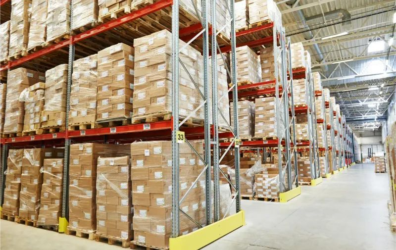

정책자금 종류
자금 용도와 매출 규모에 따라 신청할 수 있는 정책자금이 다릅니다. 5가지 자금을 비교하고 우리 회사에 맞는 자금을 찾아보세요.
정책자금 5가지, 한눈에 비교
같은 정책자금이라도 용도에 따라 신청 기관 · 필요 서류 · 상환 구조가 달라집니다. 여러 자금을 함께 설계하는 경우도 많습니다.
| 자금 종류 | 자금 용도 | 성격 | 금리 | 주요 운용 기관 | 이런 기업에 |
|---|---|---|---|---|---|
| 운전자금 | 원자재 · 인건비 · 마케팅 등 경영 활동 | 단기 유동성 | 연 2%대~ | 중진공 · 신보 · 기보 · 지역신보 · 지자체 | 매출은 있는데 현금 흐름이 막힌 기업 |
| 시설자금 | 설비 도입 · 공장 매입 · 신축 · 자동화 | 장기 투자 | 연 2%대~ | 중진공 · 기보 · 지자체 | 증설 · 설비 교체가 필요한 제조 기업 |
| 수출자금 | 수출 계약 이행 · 선적 전 생산 · 시장 개척 | 수출 연계 | 연 2%대~ | 중진공 · 무역보험공사 · 수출입은행 | 해외 주문 · 수출 계약을 확보한 기업 |
| 대환대출 | 고금리 기업대출을 저금리로 전환 | 부채 구조 개선 | 자금별 상이 | 신보 · 지역신보 · 중진공(공고 시) | 2금융권 · 카드론 이자 부담이 큰 기업 |
| 창업·기술자금 | 창업 초기 운영 · 기술 사업화 | 기술 · 성장성 평가 | 우대 금리 | 중진공 · 기보 · 신보 | 업력 7년 미만 · 기술 보유 기업 |
※ 위 내용은 「2026년도 중소기업 정책자금 융자계획」 등 공고를 바탕으로 한 일반 안내입니다. 실제 한도 · 금리 · 기간은 운용기관과 자금별 세부 기준, 기업 심사 결과에 따라 달라집니다.
-

OPERATING FUND운전자금
원부자재 구매 · 인건비 · 제품 생산 · 마케팅 등 일상적인 경영 활동에 필요한 단기 유동 자금을 지원합니다.
금리연 2%대~연간 한도최대 5억 원상환 기간최대 6년자세히 보기 → -
 FACILITY FUND
FACILITY FUND시설자금
생산설비 도입 · 공장 신축 및 매입 · 자동화 · 스마트공장 구축 등 기업의 생산 기반 확충에 필요한 장기 자금을 지원합니다.
금리연 2%대~기업당 한도최대 60억 원상환 기간최대 10년자세히 보기 → -
EXPORT FUND
수출자금
수출 계약 이행 · 해외 시장 진출 · 선적 전 생산 자금 등 수출 기업과 수출을 준비하는 기업에 필요한 자금을 연결합니다.
금리연 2%대~지원 근거수출 실적 · 계약자금 형태선적 전 · 후자세히 보기 → -
REFINANCE
대환대출
고금리 기업대출을 정책자금 · 보증부 저금리 대출로 전환해 이자 부담을 줄이고 상환 구조를 안정적으로 바꿉니다.
기대 효과이자 부담 ↓대상 범위기존 대출 범위상환 구조장기 분할자세히 보기 → -
STARTUP & TECH
창업·기술자금
업력 7년 미만 창업기업과 기술력을 갖춘 기업이 초기 비용과 성장 자금을 확보할 수 있도록 창업 · 기술 기반 정책자금을 연결합니다.
대상업력 7년 미만금리우대 금리보증기술평가 보증자세히 보기 →
상담부터 집행까지, 이렇게 진행됩니다
- 01간편 신청
8가지 항목 체크
30초 신청 - 021:1 상담
담당 전문가가
기업 현황 확인 - 03기업 진단
재무 · 신용 분석
가능 자금 분류 - 04신청 설계
자금 · 기관 · 순서
목표 한도 설계 - 05서류 · 신청
사업계획서 · 서류
준비 및 접수 - 06심사 · 집행
기관 심사 대응
집행 후 사후관리
연매출 4억 이상이라면
받을 수 있는 정책자금, 지금 확인하세요
업종 · 매출 · 업력만 알려주시면 매출 규모에 맞는 자금과 예상 한도를 정리해 드립니다.